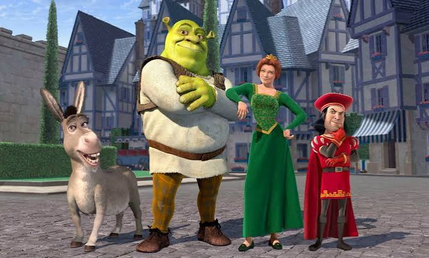

Guardiões da galáxia

Guardiões da galáxia O filme Guardiões da Galáxia acompanha o aventureiro espacial Peter Quill, que rouba uma poderosa esfera e precisa se unir a um grupo de desajustados para salvar o cosmos.
Shrek

Sinopse Shrek é uma comédia de animação de 2001 que acompanha um ogro solitário que precisa resgatar uma princesa para recuperar a paz em seu pântano
Gente Grande

Sinopse O filme Gente Grande (Grown Ups, 2010) acompanha cinco amigos de infância — Lenny (Adam Sandler), Kurt (Chris Rock), Eric (Kevin James), Marcus (David Spade) e Rob (Rob Schneider) — que se reencontram após trinta anos para o funeral do amado treinador de basquete da escola
o brilho eterno de uma mente sem lembranças

Sinopse “Brilho Eterno de uma Mente sem Lembranças” acompanha Joel (Jim Carrey) e Clementine (Kate Winslet), um casal que decide se submeter a um tratamento médico experimental para apagar todas as lembranças um do outro após um término difícil
(500) Dias com Ela
 Dias com Ela.jpg)
Sinopse (500) Dias com Ela (2009) é um filme dirigido por Marc Webb que subverte as comédias românticas tradicionais ao contar a história de um relacionamento de forma não linear.